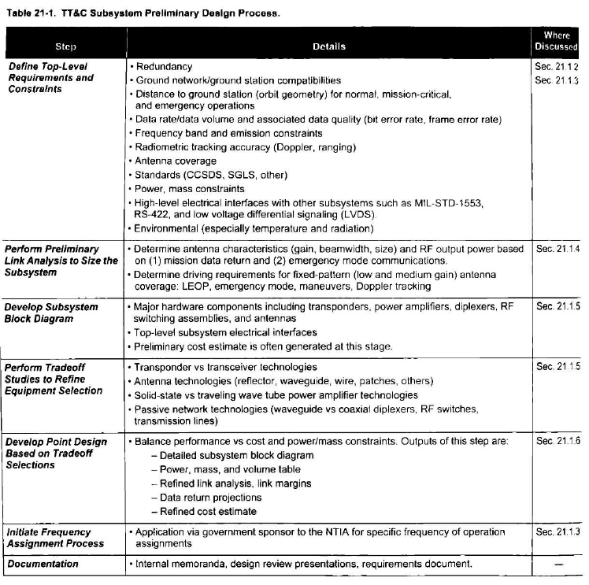

Universidad Nacional Autónoma de México · Facultad de Ingeniería
SMAD · Cap. 21 · Spacecraft Subsystems IV
Telemetry, Tracking
and Command
and Command
(TT&C) Subsystem
Equipo
José Manuel López Pérez
Alejandro Eliel Rosales Linares
Curso
Materia: Aviónica
Profesor: Ing. Hugo César Garza Magallón
Institución: UNAM · Facultad de Ingeniería
01
Sección 21.1.1 · Tabla 21-1
Proceso de Diseño Preliminar TT&C
El subsistema TT&C parte de los requisitos de misión y sigue un proceso iterativo de seis pasos. El driver principal es siempre la tasa de datos del downlink, que dicta la potencia del transmisor y el tamaño de la antena.
Flujo de diseño — haz clic en cada paso
01
Definir requisitos y restricciones
02
Link analysis preliminar
03
Diagrama de bloques
04
Estudios de tradeoff
05
Point design
06
Asignación de frecuencias

02
Sección 21.1.2 · Tabla 21-2
Requisitos del Subsistema TT&C
Los requisitos se derivan directamente de la misión. La distancia a la estación terrena, la actitud del satélite y el volumen diario de datos científicos son los tres factores que más los condicionan.
Tabla 21-2 completa — Near-Earth vs Deep-Space
Parámetros por familia
Near-Earth
Deep-Space
| Familia | Parámetro | Near-Earth | Deep-Space |
|---|
¿Cómo leer esta tabla? Cada familia agrupa parámetros del mismo tipo técnico. Los valores muestran los rangos típicos de la Tabla 21-2 del SMAD para misiones en órbita cercana (≤ 2×10⁶ km de la Tierra) y misiones de espacio profundo (> 2×10⁶ km). Las barras azul/verde son proporcionales a la magnitud relativa del parámetro. La diferencia más dramática está en el uplink de emergencia: Deep-Space lo reduce a 7.8 bps porque la señal cruza cientos de millones de km.
03
Sección 21.1.3 · Tabla 21-3
Bandas de Frecuencia RF
La selección de banda de operación es uno de los primeros y más importantes tradeoffs del diseño. La naturaleza de la misión, las redes de tierra disponibles y el ancho de banda necesario determinan la banda elegida.
Asignaciones completas — Tabla 21-3 (todas las bandas)
RF Channel Allocations for Space MissionsTabla 21-3
| Banda | Rango general | Near-Earth (GHz) | Deep-Space (GHz) | Ejemplos / Notas |
|---|---|---|---|---|
| VHF/UHF | 0.1 – 0.45 GHz | 0.144–0.146 (amateur) 0.435–0.438 (amateur) | 0.435–0.450 (forward) 0.390–0.405 (return) | Microsats, amateur radio, Mars/Electra relay |
| S-Band Militar | 1.7 – 2.3 GHz | 1.7–1.9 (up) 2.2–2.3 (down) · BN≤6 MHz | N/A | Misiones militares · AFSCN |
| S-Band NASA ★ | 2.0 – 2.3 GHz | 2.025–2.12 (up) 2.2–2.3 (down) · BN≤6 MHz | 2.0–2.1 (up) 2.2–2.3 (down) | ISS, TDRSS, NEAR-Earth misiones. No soportada en futuro DS |
| C-Band Comercial | 3.7 – 6.4 GHz | 3.7–4.2 (down) 5.925–6.425 (up) | N/A | Satélites de comunicaciones comerciales |
| X-Band Ciencia Tierra | 8.0 – 8.4 GHz | 8.0–8.4 (down) · BN≤400 MHz | N/A | Landsat, RADARSAT |
| X-Band Ciencia Espacio ★ | 8.4 – 8.5 GHz | 8.4–8.45 (down) · BN≤10 MHz | 8.45–8.5 (down) | Near-Earth y Deep-Space. Alta tasa de datos científicos |
| Ku-Band Comercial | 11 – 14 GHz | ~11 (down) ~14 (up) | N/A | Direct broadcast. Frecuencias específicas varían por región |
| Ku-Band TDRSS | 13.9 – 15 GHz | 13.9 (forward) 15.0 (return) | N/A | Shuttle, ISS → TDRSS. Siendo eliminada para misiones espaciales |
| Ka-Band Comercial | 17.7 – 30 GHz | 17.7–20.2 (down) 27.5–30.0 (up) | N/A | Direct broadcast. Fixed Satellite Service |
| Ka-Band TDRSS/Lunar | 22.6 – 40.5 GHz | 22.6–23.6 (forward) 25.2–27.2 (return) 40–40.5 (forward) 37–38 (return) | N/A (Lunar trunk link) | TDRSS alta tasa. Lunar trunk link |
| Ka-Band Deep Space ★ | 31.8 – 40.5 GHz | N/A | 34.2–34.7 (up) 31.8–32.3 (down) 37–38 (return) 40–40.5 (forward) | Mars Reconnaissance Orbiter (MRO). Alta tasa ciencia planetaria. Deep space trunk link |
★ = Bandas más utilizadas en misiones actuales. La selección de banda implica un tradeoff fundamental: frecuencias bajas (S-band) son robustas y baratas pero tienen poco ancho de banda (BN≤6 MHz, típicamente <1 Mbps). Frecuencias altas (Ka-band) permiten cientos de Mbps pero sufren fades severos por lluvia (>10 dB) y requieren apuntamiento de sub-milirradián. El proceso de aprobación ante la NTIA/UIT (Fig. 21-1 del SMAD) puede tardar años.
04
Sección 21.1.4 · Ec. 21-1 a 21-5 · Tabla 21-4
Link Budget
El link budget es la contabilidad completa de ganancia y pérdida de señal entre el satélite y la estación terrena. Si el margen resultante es positivo, el enlace "cierra" — el receptor puede demodular los datos con la tasa de error especificada.
Ecuaciones del SMAD — Ec. 21-1 a 21-5
Potencia recibida (Ec. 21-1)
Pr = Pt · Gt4π d² · Acr
Ec. 21-1
Forma de apertura (Ec. 21-2)
Pr = Pt · Aet · Aerd² · λ²
Ec. 21-2
Ecuación de Friis (Ec. 21-3)
Pr = Pt · Gt · Gr(4πd/λ)2
Ec. 21-3
SNR del sistema (Ec. 21-4)
SNR = PrN = Pt · Gt · Gr(4πd/λ)2 · k · Ts · B
Ec. 21-4
Eb/No — PM residual (Ec. 21-5)
EbNo = Pt · Gt · Gr · sin²(β)(4πd/λ)2 · k · Ts · R
Ec. 21-5
Path loss en dB
PL (dB) = 32.45 + 20·log10(f [MHz]) + 20·log10(d [km])
Derivada de Ec. 21-3
Link margin (dB)
M = EbNorecv − EbNoreq − Lreceiver
Sec. 21.1.4
Tabla 21-4 — Downlink Analysis Examples (datos fijos del SMAD)
Análisis de downlink — misiones de referenciaTabla 21-4
| Parámetro | Sym | FireSat II (S-band NE) | SCS (S-band NE) | Mars X-band (DS) | Mars Ka-band (DS) |
|---|---|---|---|---|---|
| — ENLACE — | |||||
| RF Frequency (GHz) | fc | 2.2 | 2.2 | 8.4 | 32 |
| Distance to Ground Station | d | 2,560 km | 26,000 km | 2.5 AU | 2.5 AU |
| Information Bit Rate | R | 5 Mbps | 50 kbps | 500 kbps | 2.1 Mbps |
| Phase Mod. Index (rad pk) | β | QPSK | 1.2 | 1.2 | 1.2 |
| — TRANSMISOR — | |||||
| Transmit Power (dBm) | Pt | 36 | 36 | 50 | 50 |
| Transmit Passive Loss (dB) | Lp | −2 | −2 | −2 | −2 |
| Transmit Antenna Gain (dBic) | Gt | −4 (Hemi) | −4 (Hemi) | 46 (3-m dish) | 58 (3-m dish) |
| EIRP (dBm) | Pt·Gt·Lp | 30 | 30 | 94 | 106 |
| — PROPAGACIÓN — | |||||
| Path Loss (dB) | (4πd/λ)² | −167.5 | −187.6 | −282.4 | −294.0 |
| Atmospheric Loss (dB) | La | ~0 | ~0 | −0.3 | −1.0 |
| — RECEPTOR — | |||||
| Ground Antenna Gain (dBic) | Gr | 45.0 | 45.0 | 68.2 | 79.0 |
| Total Received Power (dBm) | Pr | −92.4 | −112.6 | −120.5 | −110.0 |
| Data-to-Total Power (dB) | sin²(β) | 0 | −0.6 | −0.6 | −0.6 |
| System Noise Density (dBm/Hz) | No=kTs | −174.6 (Ts=250K) | −174.6 (Ts=250K) | −183.8 (Ts=30K) | −179.6 (Ts=80K) |
| — RESULTADO — | |||||
| Received Eb/No (dB) | Prsin²(β)/NoR | 15.2 | 14.5 | 5.7 | 5.7 |
| Required Eb/No (dB) | 5.5 | 5.5 | 1 | 1 | |
| Receiver System Loss (dB) | −3 | −3 | −1 | −1 | |
| Link Margin (dB) | 6.7 ✓ | 6.0 ✓ | 3.7 ✓ | 3.7 ✓ | |
Notas de la Tabla 21-4: FireSat II y SCS usan 4W SSPA (S-band NE). Mars X y Ka usan 100W TWTA con antena de 3 m de diámetro en la estación de tierra. 2.5 AU = ~374 millones de km. Ts=30K para X-band DS por uso de amplificadores de bajo ruido (LNA) avanzados. Codificación ½ conv. para NE, Turbo 1/6 para DS (Required Eb/No=1 dB).
Calculadora interactiva — modifica los parámetros libremente
Calculadora link budget — Ec. 21-3, 21-4, 21-5Interactivo
Cargar preset:
Potencia Tx Pt (dBm) 36
Ganancia Tx Gt (dBic) -4
Ganancia Rx Gr (dBic) 45
Temp. ruido Ts (K) 250
Frecuencia f (GHz) 2.2
Distancia d 2,560 km
Escala log: 500 km ↔ 374 M km
Tasa de datos R 5 Mbps
Escala log: 1 kbps ↔ 100 Mbps
Pérd. atmosférica La (dB) 0.0
EIRP = Pt+Gt+Lp
30.0 dBm
Lp = −2 dB fijo
Path Loss (Ec. 21-3)
167.5 dB
32.45+20log(f)+20log(d)
Pr recibida
−92.4 dBm
EIRP−PL+La+Gr
Link Margin
6.7 dB
Nominal ✓
Eb/No recibido: 15.2 dB · No=kTs: −174.6 dBm/Hz · Requerido: 5.5 dB · Pérd. receptor: −3.0 dB
05
Sección 21.1.4 · Figura 21-2
Técnicas de Modulación
La modulación define cómo se codifica información digital sobre una portadora de radio. Se presentan tres perspectivas complementarias: el diagrama de constelación I-Q (espacio de fase), la forma de onda en tiempo, y el espectro de magnitud.
Diagrama de constelación I-Q — ¿qué es?
El plano I-Q (In-phase / Quadrature) representa el estado de la señal de radio en un instante dado. El eje I es la componente en fase con la portadora, el eje Q es la componente 90° desfasada. Cada punto en el diagrama corresponde a un símbolo transmitido. La distancia entre puntos indica qué tan fácil es distinguirlos en presencia de ruido: puntos más separados = enlace más robusto. En BPSK hay 2 puntos (1 bit/símbolo), en QPSK hay 4 puntos (2 bits/símbolo) con la misma separación de energía.
Constelación I-Q — clic en cada esquema
β = 67°
solo PM
PM Residual — Constelación y señalβ = 67°
Diagrama I-Q
Puntos de datos ligeramente desviados del eje I — la portadora residual está en el centro.
Forma de onda en tiempo — secuencia: 1 0 1 1 0 1 0 0
Los números debajo de la onda son los bits transmitidos. Las líneas verticales marcan los cambios de símbolo.
Espectro de magnitud normalizado (× tasa de bit)
El lóbulo central contiene la mayor parte de la energía. QPSK lo tiene la mitad de ancho que BPSK.
Comparativa de esquemas
| Propiedad | PM Residual | BPSK | QPSK | GMSK* |
|---|---|---|---|---|
| Bits por símbolo | 1 | 1 | 2 | 1 |
| Ancho de banda (lóbulo principal) | 4 × R | 2 × R | 1 × R | < 1 × R |
| Eficiencia de potencia | ~85% a β=67° | 100% | 100% | Alta |
| Portadora residual | ✓ Sí | No | No | No |
| Doppler y ranging simultáneo | ✓ Sí | Difícil | Difícil | No |
| Uso típico | Uplink comandos · emergencia | Uplink alta tasa · downlink moderado | Downlink alta tasa (FireSat II) | Emergente en alta tasa |
* GMSK (Gaussian Minimum-Shift Keying): técnica emergente que reduce las transiciones de fase gradualmente, minimizando sidelobes, pero a mayor complejidad en spacecraft.
06
Sección 21.1.5 · Fig. 21-3 · Tablas 21-5 y 21-6
Hardware del Subsistema
El TT&C tiene cinco elementos de hardware principales. El transponder es el corazón: unifica modulación, demodulación y ranging en un solo equipo coherente en fase, habilitando mediciones precisas de Doppler y distancia.
Diagrama de bloques — clic en cada componente
TT&C Block Diagram — Fig. 21-3Interactivo
Selecciona un componente para ver su descripción, especificaciones y rol en el sistema.
Tabla 21-5 — Eficiencia de amplificadores de potencia
SSPA · Solid-State
Bajo costo · bajo peso
Eficiencia: S-band 30–40%, X-band 20–28%, Ka-band 11–17%. Masa 0.5–1.5 kg (incluyendo convertidor). Bajo voltaje, simple, confiable. Ideal ≤15 W de salida RF.
Mejor paraNear-Earth · S-band · pequeños sats
TWTA · Traveling Wave Tube
Alta potencia · alta eficiencia
Eficiencia 50–60% a cualquier frecuencia. Masa ~2.5 kg con convertidor de potencia. RF output ~25 W (X-band), 40 W (Ka-band). Necesario para >15 W o frecuencias altas.
Mejor paraDeep-Space · X/Ka-band · alta EIRP
Tabla 21-6 — Características y aplicaciones de antenas
Antenna Characteristics and ApplicationsTabla 21-6
| Tipo de antena | Beamwidth 3dB | Ganancia | Aplicaciones | Notas |
|---|---|---|---|---|
| High Gain Parabolic Reflector |
BW = 66λ/D (D = diámetro) Single-digit deg. |
G = 10log(4πAe/λ²) = 10log(π²D²η/λ²) η ≈ 55–65% |
Alta tasa de datos — downlink/return link de ciencia | Área efectiva Ae = η × área física. Requiere gimbal de apuntamiento. Ejemplo: 0.5 m (NE), 1.5–3 m (DS) |
| High Gain Phased Array |
Dependiente del diseño de elemento y arreglo | Igual que reflector parabólico — mismas fórmulas | Requisito de empaquetado plano. Apuntamiento electrónico de haz | Eliminan necesidad de gimbal mecánico. Costo y masa aún altos para spacecraft. MESSENGER y EO-1 son ejemplos de vuelo. |
| Medium Gain Antenna (cónica o fan beam) |
10 a 90 deg típicamente | 6 a 25 dBic | Misiones Deep-Space para emergencia o llenar gap de cobertura a grandes distancias | Puede ser conical beam o fan beam. Ejemplos: small patch antenna, small dish array, reflector |
| Low Gain Antenna (omnidireccional) |
90 a 180 deg | 0 a 6 dBic | Comunicación en modo normal Near-Earth, cobertura LEOP, modo emergencia, Doppler tracking para misiones DS | Ejemplos: single patches, quadrifilar helix, open-ended waveguide. Siempre presente en el sistema — permite operar independientemente de la actitud del satélite. |
07
Sección 21.1.6 · Tablas 21-7 y 21-8
Masa y Potencia del Subsistema
El presupuesto de masa y potencia es la salida tangible del diseño de punto. Near-Earth y Deep-Space difieren sustancialmente: DS necesita más potencia para amplificar la señal a distancias planetarias y antenas más grandes para cerrar el link.
Masa Near-Earth
20.7 kg
S + X band total
Potencia NE
44–104 W
S / S+X
Masa Deep-Space
41–42 kg
X + Ka total
Potencia DS
81–165 W
X / X+Ka
Near-Earth TT&C SystemTabla 21-7
Masa (kg)
Potencia DC bus (W)
¿Cómo funciona este gráfico? Cada fila es un componente de hardware del sistema TT&C. La barra azul muestra su masa en kg y la barra verde su consumo de potencia del bus DC (ambas en escala relativa al componente más pesado/potente). Componentes sin barra verde consumen potencia despreciable (diplexers, cables, antenas pasivas). El driver de masa en NE son los cables RF y transponders dobles. En DS el driver es la antena de alta ganancia (reflector parabólico de 1.5 m + gimbal) y los TWTAs de Ka-band (81 W cada par).
08
Secciones 21.1.7 – 21.1.8
Temas Especiales y Tendencias
El TT&C espacial tiende a rezagarse respecto a las comunicaciones terrestres por las exigencias de calificación para espacio. Pero la brecha se cierra rápidamente con PEMs, FPGAs, ASICs y SDRs.
21.1.7 · Alta tasa
Ka-band y comunicaciones ópticas
S y X-band se saturan. Ka-band permite >10 Gbps pero exige apuntamiento sub-microrradián y diversidad de sitios en tierra contra lluvia. DSOC demostró Gbps desde Psique a 31 M km.
21.1.7 · Emergencia
Emergency Mode Recovery
Si el satélite pierde control de actitud, el TT&C debe garantizar uplink y telemetría. Solución: dos LGAs opuestas + divisor de potencia RF o switch que focaliza toda la RF en una hemisfera.
21.1.7 · Osciladores
Ultrastable Oscillators (USO)
Cristales con compensación térmica: ΔF/F ≈ 3×10⁻¹³ en 1–100 s. Masa ~1 kg, potencia ~2.5 W. Permiten Doppler de una vía, navegación autónoma y radio ciencia por ocultaciones planetarias.
21.1.8 · Futuro
SDR y procesamiento digital
Software Defined Radios sobre FPGAs permiten reconfigurar modulación, tasa de datos y funciones TT&C en vuelo. La conversión RF→digital migra progresivamente hacia la antena.
Evolución tecnológica TT&C espacial
1960s – 1970s
RF analógico · VHF/UHF
Primeras misiones interplanetarias. Hardware analógico discreto. Tasas en bits por segundo. Pioneer, Voyager.
1980s – 1990s
S-band estándar · CCSDS
Adopción de estándares CCSDS. DSN consolida antenas de 34 m y 70 m. TDRSS habilita contacto casi continuo LEO. Tasas de kbps.
2000s
X-band masivo · FPGA · SSPA
MRO cierra primeros links Ka-band. FPGAs permiten procesamiento flexible. SSPAs reemplazan TWTAs en NE. Tasas de Mbps.
2010s
Ka-band operacional · SDR
SDRs inician calificación para espacio. PEMs y ASICs reducen masa. Cubesats con TT&C integrado en una placa. Tasas de decenas de Mbps.
2020s – Hoy
Digital al frente · óptico emergente
DSOC (Deep Space Optical Communications) demostró Gbps desde Psique a 31 M km. LCRD e ILLUMA-T operacionales. SDRs reconfigurables en vuelo.